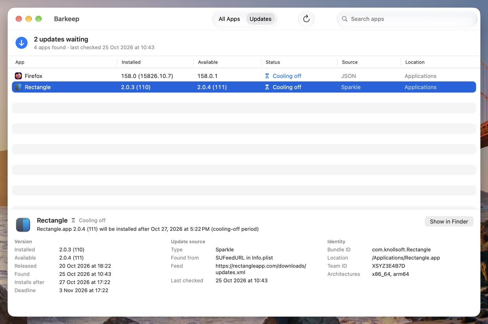
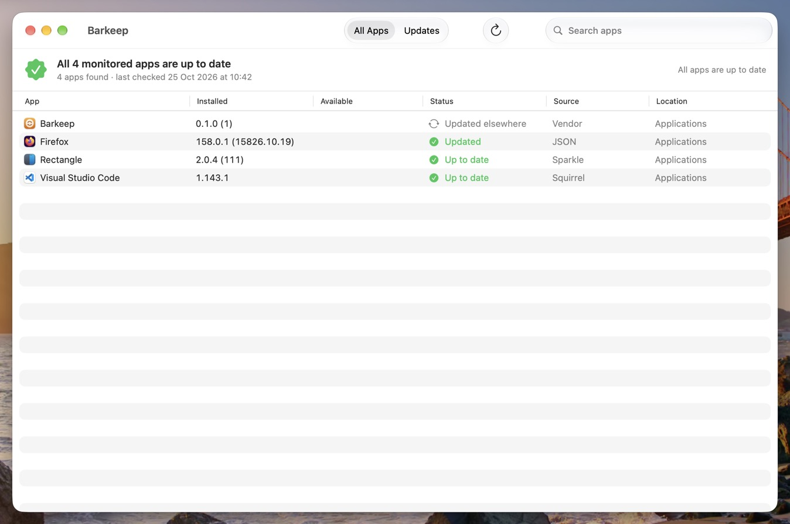
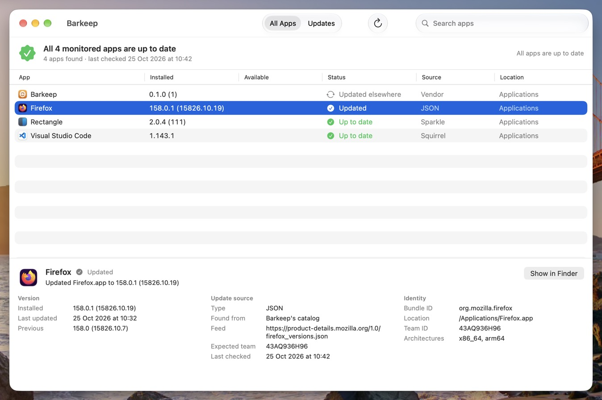
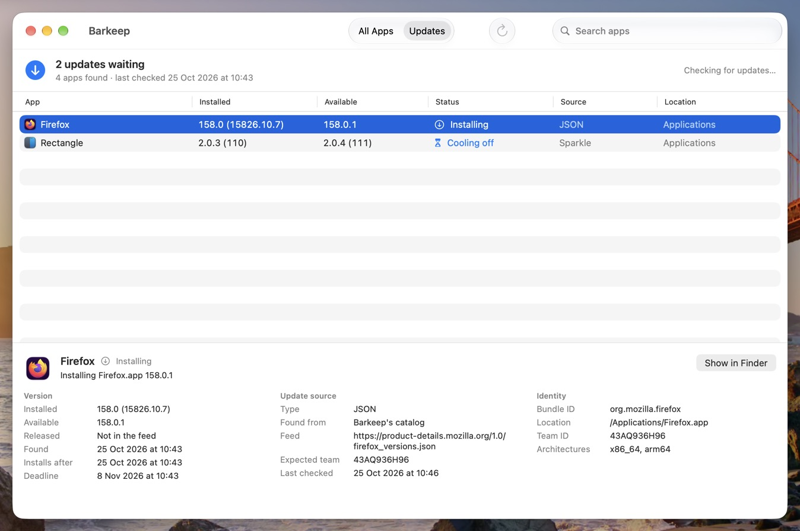
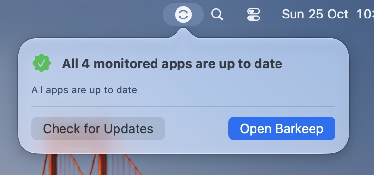
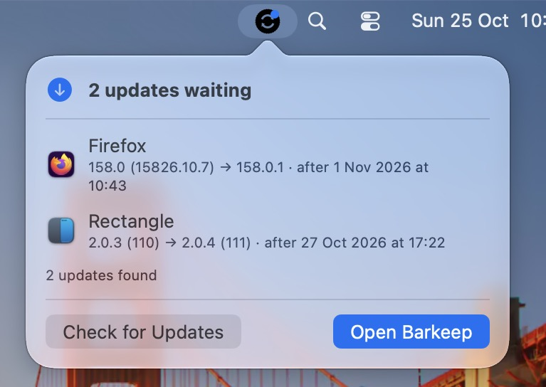
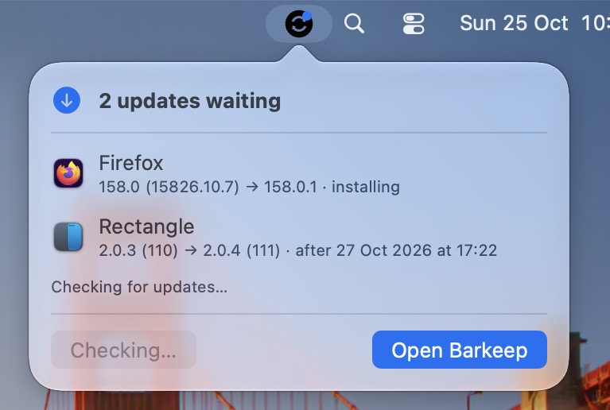

Sparkle
The appcast in the app's SUFeedURL, with the EdDSA signature the app's own
key expects. Channels, minimum macOS and delta-only items handled.
Each app has its own idea of updating: some check on launch, some ask for an admin password, some wait for the user to click a button they've learned to ignore. Your vulnerability report doesn't care whose idea it was.
Barkeep keeps the bar. It runs in the background, works out how each app updates, and installs the update while the app is closed, after it's been out long enough to trust. Nobody gets interrupted unless a deadline you set says they must.

Most apps already publish their updates somewhere. Barkeep reads the same feed they do.
The appcast in the app's SUFeedURL, with the EdDSA signature the app's own
key expects. Channels, minimum macOS and delta-only items handled.
electron-builder's latest-mac.yml (GitHub, generic or S3) with its SHA-512, and
the Squirrel-style API in VS Code's product.json with its SHA-256.
Chrome, Firefox, Zoom, Slack, Discord and Docker are built in. Add anything else in the profile: a GitHub repository, an appcast, or any URL that says what's newest.
App Store apps and apps with their own enterprise updater (Microsoft AutoUpdate, Adobe) are reported, not fought over. Apple's own apps are left to Software Update.

$ barkeep inspect "/Applications/Visual Studio Code.app"
Update source: Squirrel (catalog) https://update.code.visualstudio.com
Newest: 1.143.1, released 21 Oct 2026 at 10:15
Checksums: SHA-256
Update?: yesA feed can be hijacked. A signature from the same developer can't be faked.
The new copy must be signed by the Apple-verified Team ID of the copy it replaces, and satisfy that copy's designated requirement: the same rule macOS uses to decide two builds are the same app.
Same bundle ID, a higher version, built for this Mac's macOS and Apple silicon. No downgrades, however the feed is dressed up.
HTTPS only, size-limited, and matched against any checksum or Sparkle EdDSA signature in the feed. Gatekeeper has to agree it's notarised.
Every check runs on a root-owned staged copy beside the app, which is then swapped in atomically. What's verified is exactly what gets installed.
Updates shipped as .pkg must be signed by the app's own team and notarised,
and the app they leave behind is checked again afterwards.
Settings come from a managed profile users can't change. Root-owned files only.

The best time to update an app is when nobody is using it.
com.docker.docker, rush Chrome,
never force Slack: every timing setting can be set per bundle ID./Applications, every user's
~/Applications, one folder down, or the folders you choose.
Barkeep.app sits in the menu bar and says what's waiting, and when.



ShowInMenuBar, or stop users starting
updates with AllowUserInitiatedUpdates.One package, two profiles, no scripts per app.
/usr/local/bin/barkeep,
the daemon that does the work, and Barkeep.app for the menu bar. Don't want the app?
barkeep-cli.pkg leaves it out.barkeep status, the log at
/Library/Logs/barkeep.log, or Barkeep.app's window.$ barkeep status
Firefox.app 150.0 → 158.0.1 [waitingForQuit] Firefox 158.0.1 will be installed when it quits, or by 31 Oct 2026 at 09:12
Slack.app 4.52.182 [upToDate] Slack.app 4.52.182 is up to date
Zoom.app 7.1.0 (60000) → 7.2.2.88465 [coolingOff] will be installed after 25 Oct 2026 at 14:00--json everywhere, for scripts and
reporting.sudo barkeep uninstall.Barkeep updates apps that can be updated by replacing the app, or by the vendor's signed package. It doesn't sign in to the App Store for anyone, can't update an app whose feed it can't find (tell it in the profile), and on a cold-blooded deadline it asks apps to quit; only if you say so does it insist. The README covers the trade-offs in full.